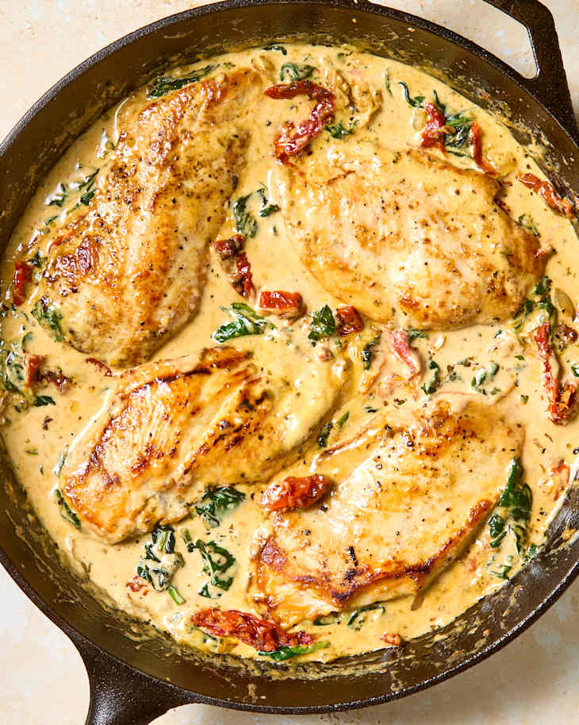

Tuscan Chicken

Description
This Tuscan Chicken perfectly balances the rich creamy sauce with the spinach and tomato flavor of the vegetables. It will be the new favorite of the whole family. Serve it with rice for a complete meal.
Ingredients
- 2 Tbsp oil
- 2 Tbsp butter
- 5 chicken breasts
- 2 heaping tsp dijon mustard
- 1 boullion cube
- 2 cups of cream
- 10 oz spinach
- 1 tomato
- salt, pepper, and garlic powder to taste
Steps
- Cut the tomato into small cubes and the chicken breasts into strips.
- Put the oil and butter in a frying pan and melt the butter on medium-high heat.
- As the butter melts, put salt, pepper, and garlic powder on the chicken to your liking.
- Fry the strips of chicken in the butter/oil mixture.
- Remove all the chicken from the pan and set it aside.
- Put the dijon mustard and boullion cube in the pan and mix into the remaining butter/oil.
- Pour the cream into the frying pan.
- As the cream begins to heat up, add the spinach and tomato to the frying pan.
- When the spinach has cooked down and there is space in the pan, add the chicken into the sauce.
- Simmer for a few minutes and enjoy!
Home